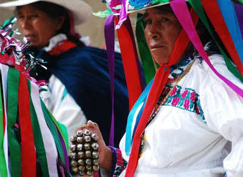

La HIstoria Completa:

¿Que es?
La HIstoria Completa:
El idioma chol o ch'ol, cuyo endónimo es lakty'añ, es una lengua mayense de la rama cholana hablada por el pueblo chol, que habita principalmente los estados mexicanos de Quintana Roo, Campeche, Tabasco y Chiapas, siendo Chiapas donde se concentran la mayoría de los hablantes, sobre todo en los municipios de Palenque, Tila, Tumbalá, Sabanilla, Salto de Agua, Catazajá y Yajalón.
El chol se divide en tres dialectos: Chol de Tila, hablado por casi 44 000 personas, con un índice de 25 % de monolingüismo. Esta variedad se habla principalmente en el municipio de Tila, en Chiapas; Chol de Tumbalá, hablado por 90 000 personas en el municipio de Tumbalá, también en Chiapas. El índice de monolingüismo de los hablantes de esta variedad es de 30 % aproximadamente; Chol de Sabanilla.
El grupo cholano de la familia mayense es considerado como un conjunto de lenguas bastante conservadoras. Se ha sostenido que las lenguas cholanas, es decir, el chol, el chontal y el chortí, serían muy cercanas al maya clásico.1
El nombre ch'ol, empleado históricamente por la población mexicana, designa a un grupo indígena y también a un conjunto de lenguas indígenas estrechamente relacionadas entre sí. Dicho nombre es la forma castellanizada de ch´ol, que en su propia lengua significa milpa. Los hablantes de ch'ol llaman a su lengua lakty’añ, que significa nuestra lengua. La lengua lakty’añ o como comúnmente se le conoce, ch'ol, es una lengua perteneciente a la familia maya; la lengua más cercana es el chontal de Tabasco. Se habla en los estados de Campeche, Chiapas y Tabasco. Actualmente, es considerada como una lengua con riesgo no inmediato de desaparición. A continuación se muestran las dos variantes del lakty’añ: 1. ch'ol del noroeste/ lakty’añ (del noroeste) 2. ch'ol del sureste/ lakty’añ (del sureste)
El área históricamente ocupada por los ch´oles se localiza en el sureste de México. Las lenguas ch´oles se hablan en Chiapas (17 municipios) y en Tabasco (cinco municipios). En esta área el Instituto Nacional de Estadística, Geografía e Informática (INEGI), a través del XII Censo General de Población y Vivienda 2000, identificó 915 localidades, en cada una de las cuales el 5% o más de la población habla alguna de las lenguas ch´oles; todas las localidades se representan en estas cartas. Las lenguas ch´oles colindan al norte del área con el chontal de Tabasco; al sur con las lenguas tzeltales; al este con el lacandón, y al oeste con algunas de las lenguas zoques. Una de las lenguas ch´oles comparte el territorio municipal con alguna de las lenguas tzeltales, por ejemplo en Ocosingo, Chiapas.

Los choles son una etnia indígena que habita en los estados mexicanos de Chiapas, Tabasco, Campeche y la república de Guatemala, pertenecen a la cultura maya. Los choles se llaman ellos mismos ”Winik” que es un vocablo maya cuyo significado es ”hombre o varón”, en su cosmovisión antigua explican su existencia en torno al maíz, que es el alimento sagrado y otorgado por los dioses, principio y fin de la vida; en otras palabras son los “hombres creados del maíz”. En la sociedad mexicana a los winik se les conoce como choles, pero la etnia considera ciertos matices, winik significa hombre y xixik significa mujer; pero winik también es utilizado para referirse a ellos mismos o a sus congéneres indígenas, utilizando el término winikon bā lojon de manera más exclusiva. Regionalmente llaman xk'ukwits a los habitantes de Tumbalá, cuyo significado es los del cerro del quetzal; llaman ajlumob que significa señores de la tierra a los habitantes de Tila y llaman otulob a los habitantes de el Limar. Por otra parte utilizan el vocablo "kaxlan" para referirse a los extranjeros, ya sean encomenderos, ladinos, finqueros, iglesia, gobierno, para ellos los que "no trabajan", "los que no producen alimento", "los que viven del trabajo de los winik". ”Ch'ujtiat, el señor del Cielo, creó la Tierra, Tumbalá es el yutbal-lum, el ombligo, el lugar donde se formó la Tierra. Después creó los 12 chuntie winik parecidos a los hombres, para cargarla, la Tierra es plana, ellos se cansan de cargarla y cuando quieren cambiar de hombro, la Tierra se mueve y hay temblores. También creó a los primeros hombres, parecidos a los chuntie winik, pero no inmortales, quienes vivieron y fueron ingratos con Ch'ujtiat, el cual envió un diluvio para matarlos a todos; cuando cesó la lluvia”
| IMAGEN | .jpeg) |
.jpeg) |
|
|---|---|---|---|
| PRECIO | $200 | $300 | $150 |
| Audio |